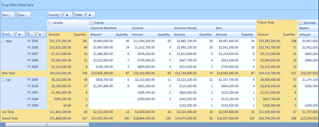
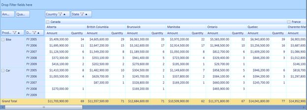

The subtotal hiding feature is used to show or hide the subtotals in the PivotGrid. This feature enables the user to have an abstract view of the data, in the case of larger data table by hiding subtotals using the ShowSubTotals property
Use Case Scenarios
When the user has more computational fields with subtotals shown below each group in their PivotGrid, the user might find it difficult to view all the data. In that case, the user can hide the subtotals and make it visible when required
The following screen shots, shows the PivotGrid with the subtotals shown and hidden:

Figure 25 PivotGrid with Subtotals

Figure 26 PivotGrid with Subtotals Hidden
Properties
Table 5: Property Table
|
Property |
Description |
Type |
Data Type |
Reference links |
|
ShowSubTotals |
Shows or hides the subtotals |
Dependency |
Boolean |
- |
Methods
Table 6: Method Table
|
Method |
Description |
Parameters |
Type |
Return Type |
Reference links |
|
SubTotalsRendering |
Handles rendering of cells(showing or hiding the cells) by calculating the cell range values in the Pivot Engine based on the ShowSubTotals property value in the control |
- |
Server Side |
Void |
- |
Sample Link
Follow the steps given below to view a sample of the sub total hiding feature:
1. Select Start -> Programs -> Syncfusion -> Essential Studio x.x.xx -> Dashboard.
2. Click Run Samples for SL under BI edition.
3. Select PivotGrid.
4. Navigate to Appearance > Appearance Demo
Adding Subtotal Hiding to an Application
The user can show or hide the PivotGrid subtotals using the ShowSubTotals property. To show sub totals, set this property to true. To hide subtotals, set this property to false. By default the value of the ShowSubTotals property’s value is set to true.
The following code snippet shows how to set values for the ShowSubTotals property:
To show subtotals:
|
[C#]
this.pivotGrid1.ShowSubTotals = true;
|
To hide subtotals:
|
[C#]
this.pivotGrid1.ShowSubTotals = false;
|